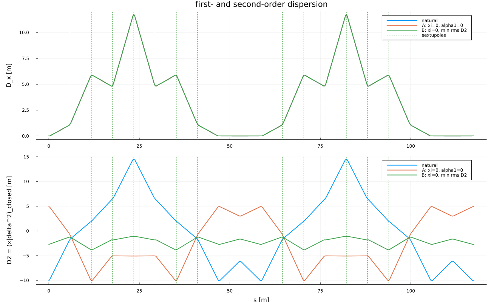

Second-order dispersion and momentum compaction
The quadratic piece of the one-turn polynomial. A linear matrix cannot see $D_2$ or $\eta_1$. Both are read from the same Lie product as Twiss; they are not a second optical theory.
Closed orbit in $\delta$
\[z_\perp(\delta)=D_1\delta+D_2\delta^2+O(\delta^3),\]
from $M_\perp(z_\perp(\delta),\delta)=z_\perp(\delta)$ order by order.
Path length and $\alpha_i$
On the closed orbit the geometric circumference admits the expansion
\[\frac{C(\delta)}{C_0}=1+\alpha_0\delta+\alpha_1\delta^2+\alpha_2\delta^3+\cdots.\]
With the canonical coordinate $l$ related to time of flight by $l=-v\Delta t$, one turn gives $\Delta l=-C(\delta)+C_0\,v(\delta)/v_0$, hence
\[\alpha_0=-\frac{l_1}{C}+\frac{1}{\gamma_0^2},\qquad \alpha_1=-\frac{l_2}{C}+c_2,\qquad \alpha_2=-\frac{l_3}{C}+c_3,\]
where $v/v_0-1=c_1\delta+c_2\delta^2+c_3\delta^3$ and $c_1=1/\gamma_0^2$. Equivalently, $\alpha_i$ may be fitted from $C(\delta)/C_0$ evaluated on closed orbits at several $\delta$.
Slip factor
The relative change of revolution period is the time of flight of one turn. With $l=-v\Delta t$ one has $\Delta T/T_0=-(l/C)/(v/v_0)$, so on the closed orbit
\[\eta_0=-\frac{l_1}{C}=\alpha_0-\frac{1}{\gamma_0^2},\qquad \eta_1=-\frac{l_2}{C}+\frac{l_1}{C}\,\frac{1}{\gamma_0^2} =\alpha_1-\frac{\alpha_0}{\gamma_0^2}+\frac{3\beta_0^2}{2\gamma_0^2}+\frac{1}{\gamma_0^4}.\]
These are the coefficients used in the averaged longitudinal Hamiltonian and in the formula for $\delta_{\mathrm{eq}}$. They come from the one-turn Lie product, expanded to a polynomial only to read $l_1$ and $l_2$.
